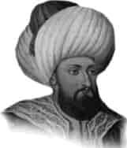

II. MURAT
Annesi : Emine Hatun
Doğumu : 1402
Vefatı : 3 Şubat 1451
Saltanatı : 1421 - 1451 (30 yıl)
II. Murat, uzun boylu, beyaz tenli, doğan burunlu ve gayet güzel yüzlü bir padişahtı. Çok güzel konuşurdu. Kendisinin en büyük mutluluğu, Fatih Sultan Mehmet gibi eşine ender rastlanacak ve çok kıymetli bir zatın babası olmaktı.
Sultan Murat sükûneti ve huzurlu yaşamayı arzu eden fakat icap ettiği takdirde gayet hareketli, cesur ve hiçbir şeyden yılmayan bir kimse idi. Otuz yıllık saltanatı müddetince, memleketini çok büyük bir şan ve şerefle idare ederek, emri altında bulunan herkeste, dindar, âdil ve lütufkâr bir padişah namı bırakmıştır.
Sultan II. Murat’ın çocukluğu Amasya’da geçti. On sekiz yaşında tahta çıktı. Şair ve hattattı. Çok iyi bir askerdi. Şiirler yazmıştır. Zamanında Venedik donanmasıyla savaşıldı. Selanik yeniden fethedildi. Düzmece Mustafa İsyanı oldu ve bu isyanı bastırdı. 1422’de İstanbul’u kuşattı. 1423’de Mora yeniden alındı. 1428’de Germiyan Beyliği Osmanlılara katıldı. Venedik ve Haçlılar’a karşı Güvercinlik Zaferi kazanıldı. 1430’da Selanik yeniden alındı. 1438’de Bosna’ya hâkim olundu. 1439’da Belgrad kuşatıldı. 1443’de Haçlılar’a karşı İzlâdi Derbendi Zaferi kazanıldı. Temmuz 1444’de Segadin Antlaşması yapıldı, fakat haçlılar sözlerinde durmadılar. II. Murat küçük yaştaki oğlunu tahta çıkarınca, ümide kapılarak Osmanlı topraklarına girdiler. Oğlu II. Mehmet (Fatih) ordunun başına babasını başkumandan tayin etti.
Kasım 1444’de Varna Zaferi kazanıldı. Varna Zafe-ri’nden sonra II. Murat tekrar tahta geçti. 1445’de Mora’ya ve Arnavutluk’a sefer açtı. Ekim 1448’de Haçlılar yeniden saldırdılar. Bu defa da II. Kosova Zaferi kazanıldı.
1451 yılında Sultan Murat bütün esirlerini salıverdi. Kırk yedi yaşındayken Edirne Sarayı’nda vefat etti. Vasiyeti üzerine Bursa’da Muradiye Camii yanına defnedildi. Mezarının üzerini örtmemeyi, kenarlarına hafızların oturup Kur’an okuyabilmeleri için yerler yapılmasını ve Cuma günü mezara konulmasını vasiyet etmişti. Vasiyeti öylece yerine getirildi.
Sultan Murat zamanında memleketin birçok yerlerinde, camiler, medreseler, saraylar ve köprüler yapılmıştır. Bunlardan birisi Edirne’deki Üç Şerefeli Cami’dir. Camiin yanında bir medrese ve fakirler için bir imarethane mevcuttur. Yine Edirne’de Muradiye Camii’ni inşa ettirmiştir. Bu caminin duvarları ve mihrabı son derece güzel çinilerle süslenmiştir. Bursa’daki Muradiye Camii’ni ve Ergene Nehri üzerindeki 170 ayaklı Uzun Köprü’yü de Sultan Murat yaptırmıştır.
Erkek çocukları: Fatih Sultan Mehmet, Ahmet, Alâaddin, Orhan, Hasan, Ahmet (II.)
Kız çocukları: Şehzade ve Fatma Hatun.